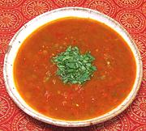

|
Udupi Tomato RasamIndia, South - Thakkali Rasam Udupi | ||||
| Makes: Effort: Sched: DoAhead: |
5 cups *** 1-3/4 hrs Yes |
In India, Rasams are a second course, drizzled over rice, eaten with the fingers, but see Serving. Most of the Prep time is for chopping tomatoes - a processor will give you a different texture. | |||
|
1-1/2 1/4 1 2 3/4 1 ------- 1 1/2 1/8 5 ------- 2 1/4 1 1 ------- 1 1 1 ------- 2 |
# c c T c --- t t t t --- t t t t --- T c c --- T |
Ripe Tomatoes (1) Toor Dal (2) Water Tamarind (3) Water Green Chili (4) -- Tempering Mustard seeds (5) Cumin seeds Asafoetida (6) Curry Leaves (7) -- Powders Udupi Rasam Podi (8) Turmeric Jaggery Salt -------------- Coconut Oil (9) Water Water (more) -- Garnish Cilantro Leaves |
PREP - (1-1/2 hr - 30 min work)
|
iov_rastomu1 160914 inet var - www.clovegarden.com
©Andrew Grygus - agryg@aaxnet.com - Linking to and
non-commercial use of this page is permitted.